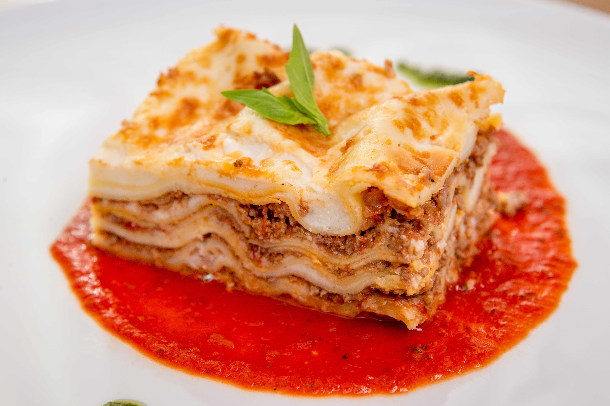

Lasagna
Home

Lasagna Recipes
this is an easy and delicious lasagna recipes
Ingredients
- 6 uncook lasagna noodles
- 3 skinless, boneless chicken breast halves
- 1 package cream cheese, softened
- ¼ cup hot water
- 1 cube chicken brouillon
- 1 jar spagetti sauce
Steps
- Gather all ingredient. Preheat the oven to 350 degrees F
- Bring large pot of lightly salted water to a boil. cook lasagna noodles in boiling water, stirring occasionally, until tender yet firm to the bite, about 8 minutes, drain, rinse with cold water, and set aside
- Meanwhile, place chicken in a saucepan with enough water to cover; bring to a boil. cook until chicken is no longer pink and the juices run clear, about 20 minutes. Remove chicken from the saucepan and shred.
- Combine shredded chicken, 1 cup mozzarella cheese, and cream cheese in a large bowl. Dissolve hot water and bouillon in a liquid measure; pour over chicken mixture and stir until well combined.
- Spread 1/3 of the spaghetti sauce in the bottom of a 9x13-inch baking dish. Cover with 1/2 of the chicken mixture and top with 3 lasagna noodles; repeat. Top with remaining sauce and sprinkle with remaining 1 cup mozzarella cheese.
- Bake in the preheated oven for 45 minutes.
- Serve and enjoy!